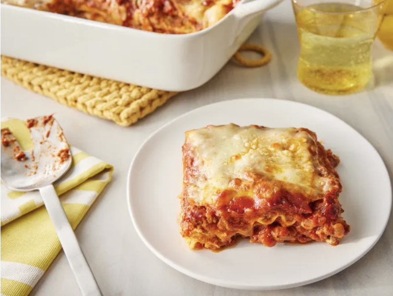

Back to Home
World's Best Lasagna

Description
This lasagna recipe is a family favorite! Layers of rich meat sauce, creamy ricotta, and gooey mozzarella make it the ultimate comfort food.
Ingredients
- 1 lb ground beef
- 1 jar marinara sauce
- 1 package lasagna noodles
- 1 cup ricotta cheese
- 2 cups shredded mozzarella cheese
- 1/2 cup grated Parmesan cheese
- 1 egg
- 2 cloves garlic, minced
- 1 tsp dried basil
- Salt and pepper to taste
Steps
- Preheat your oven to 375°F (190°C).
- In a large skillet, brown the ground beef over medium heat. Drain excess fat and add the minced garlic. Cook for another minute.
- Stir in the marinara sauce, dried basil, salt, and pepper. Simmer for 10 minutes.
- In a separate bowl, mix the ricotta cheese with the egg and a pinch of salt.
- In a greased baking dish, spread a layer of meat sauce, followed by a layer of lasagna noodles, then a layer of the ricotta mixture, and a layer of mozzarella cheese. Repeat the layers until all ingredients are used, finishing with a layer of meat sauce and a generous topping of mozzarella and Parmesan cheese.
- Cover with aluminum foil and bake for 25 minutes. Remove the foil and bake for an additional 20 minutes, or until the cheese is bubbly and golden brown.
- Let the lasagna rest for 10 minutes before slicing and serving. Enjoy!
Back to Home
Reference Link: World's Best Lasagna